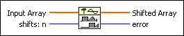
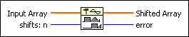
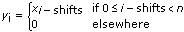

Y[i]=X[i-n] VI
Owning Palette: Signal Operation VIs
Requires: Full Development System
Shifts the elements in the Input Array by the specified number of shifts: n.

 Add to the block diagram Add to the block diagram |
 Find on the palette Find on the palette |
Owning Palette: Signal Operation VIs
Requires: Full Development System
Shifts the elements in the Input Array by the specified number of shifts: n.

| Add to the block diagram |
Find on the palette |
 |
Input Array is the input array to be shifted. |
 |
shifts: n specifies the direction and number of shifts applied to Input Array. The VI shifts Input Array to the right if shifts: n is positive and to the left if shifts: n is negative. The default is 0. To properly shift Input Array without setting the output sequence Shifted Array to 0, the absolute value of shifts: n must be less than the number of elements in Input Array: |shifts: n| < n. If the absolute value of shifts: n is greater than or equal to the number of samples in Input Array, the VI sets Shifted Array to 0 and returns an error. |
 |
Shifted Array returns the output sequence. |
 |
error returns any error or warning from the VI. You can wire error to the Error Cluster From Error Code VI to convert the error code or warning into an error cluster. |
Let the sequence Y represent the output sequence Shifted Array. Then the elements of Y are related to the elements of X by

for i = 0, 1, n – 1,
where n is the number of elements in Input Array.
 | Note The Y[i]=X[i-n] VI does not rotate the elements in the array. The Y[i]=X[i-n] VI disposes of the elements of the input sequence shifted outside the range. You cannot recover those elements by shifting the array in the opposite direction. |